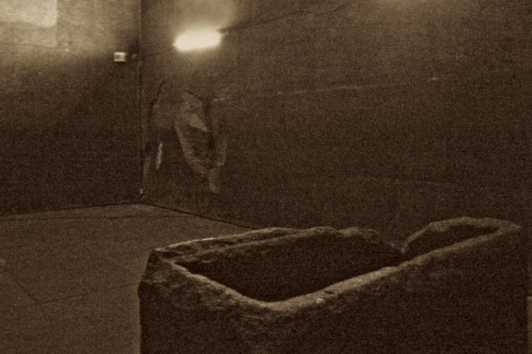
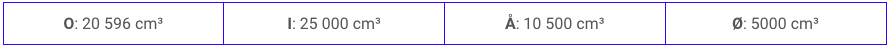
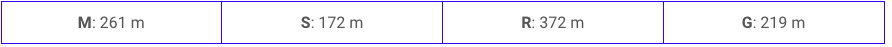

Hovedlyset blinket igjen. Så ble det helt mørk. Mørkt som i graven. Flere hylte høyt i gravkammeret og ekkoet gjallet gjennom steingangene. Etter noen sekunder i totalt mørke ble nødaggregatet startet og en og annen lampe lyste opp. Du kan trygt si at det la en demper på stemningen som ikke var på topp fra før. Graven var brutt opp for lenge siden og verdisakene var for lengst forsvunnet. Bare en uhyggelig stemning var igjen. En port med kodelås sperret for en passasje som gikk videre innover i pyramiden. En modell av pyramiden stod utstilt på en steinhylle. På modellen var det skrevet noen faktaopplysninger om pyramidens mål da den stod ferdig. Kheopspyramiden var 146 meter høy og grunnflaten er kvadratisk med sidelengde på 230 meter.
Inne i pyramiden er det en modell av pyramiden i målestokken 1:500. Volumet til selve Kheopspyramiden er omtrent 2 574 500 m³. Hva er volumet til modellen i cm³?
Velg bokstaven som har riktig svaralternativ:
Hvis du skal gå fra det ene hjørnet opp til toppen av Kheopspyramiden, omtrent hvor langt er det i luftlinje?
Velg bokstaven som har riktig svaralternativ:
